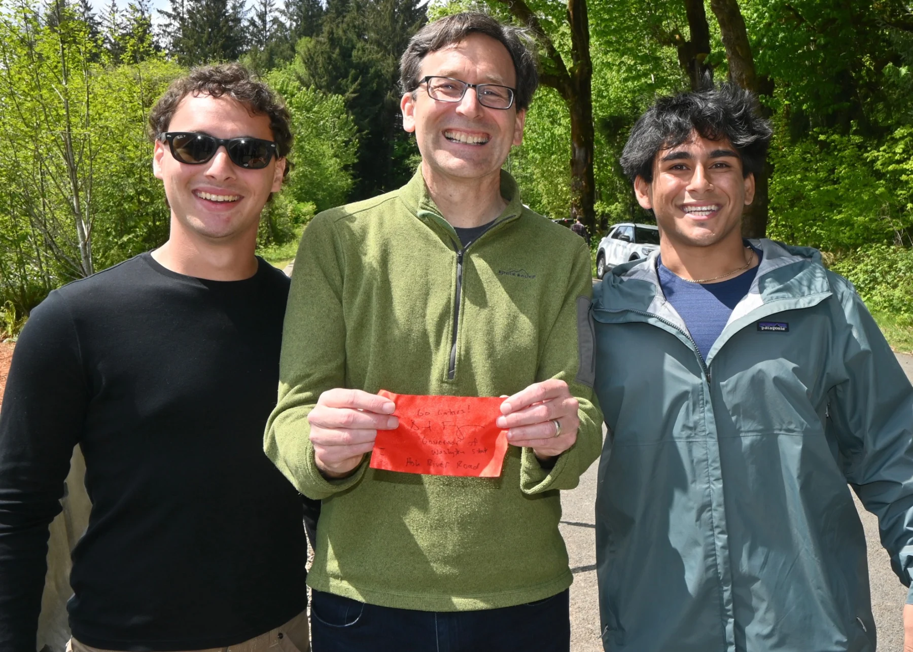
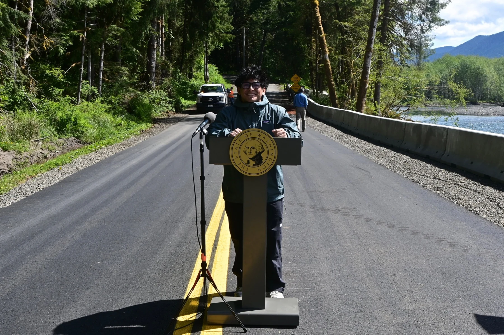
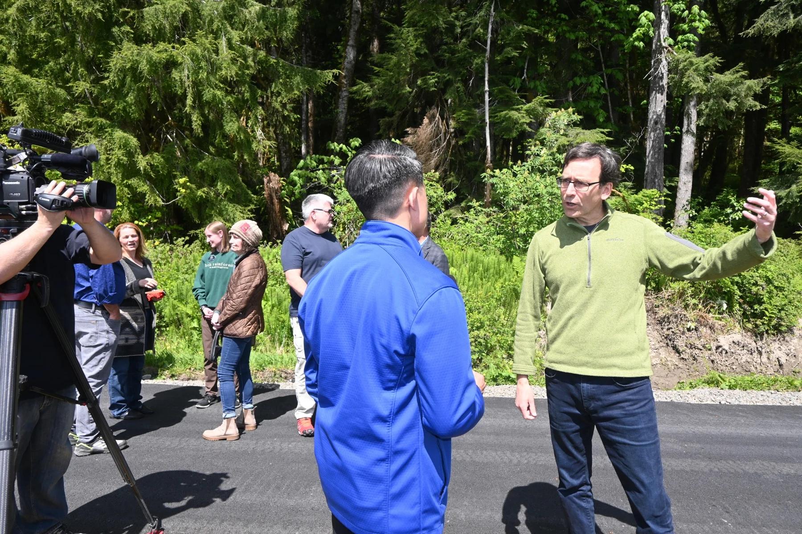
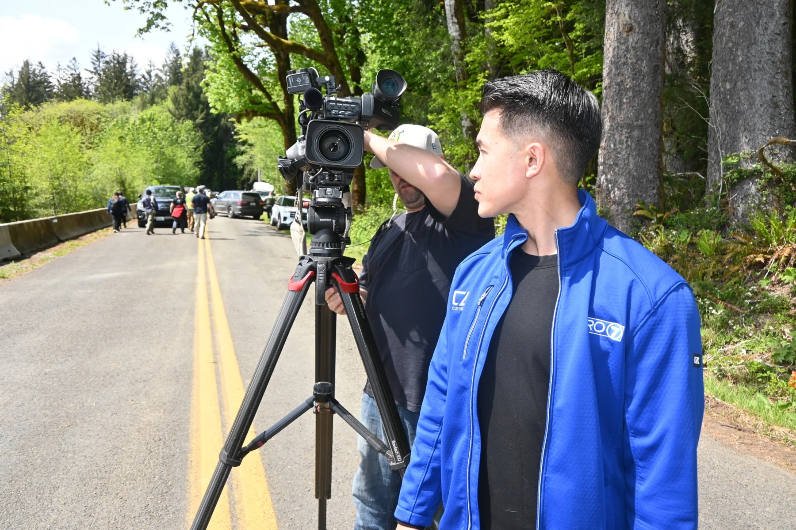
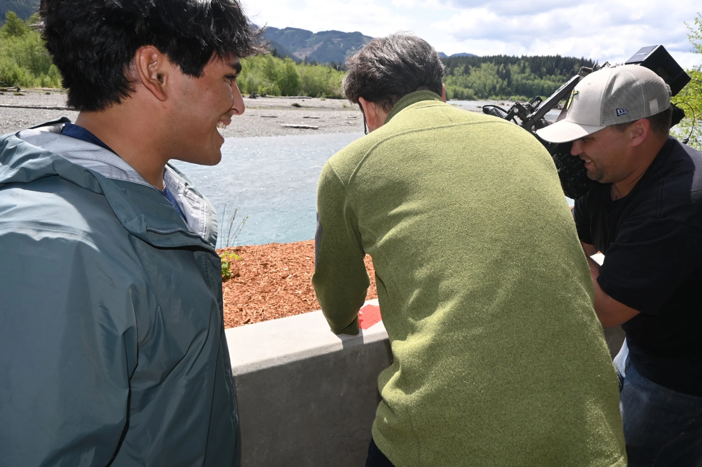
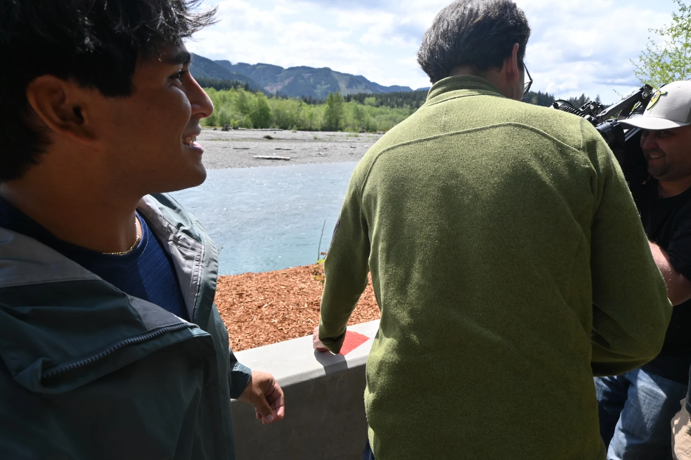
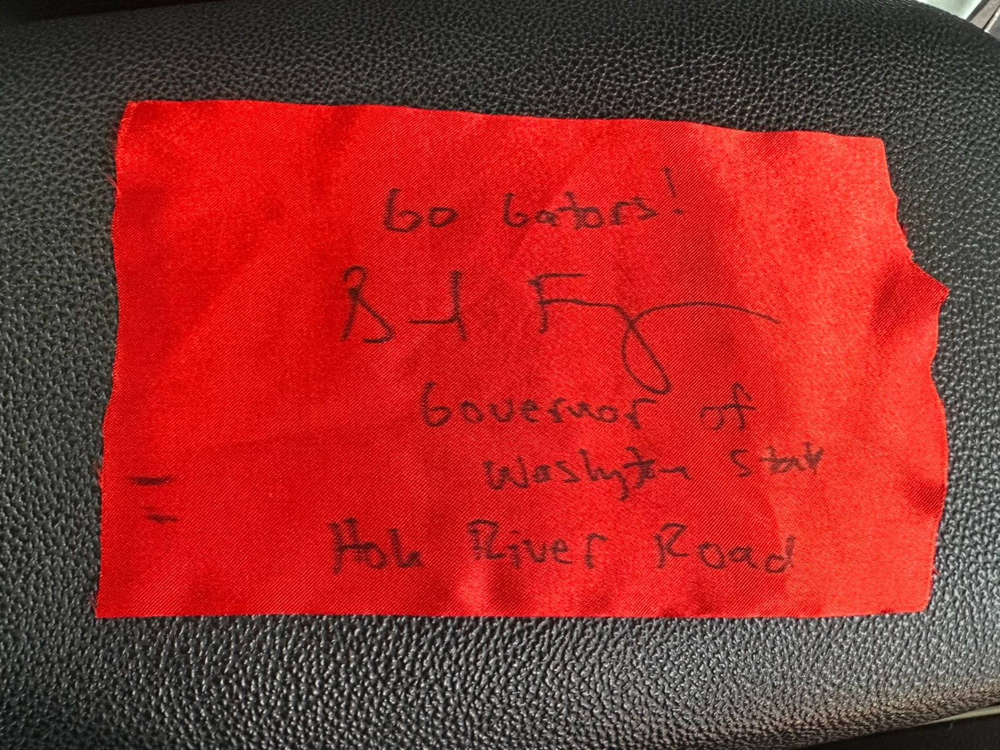
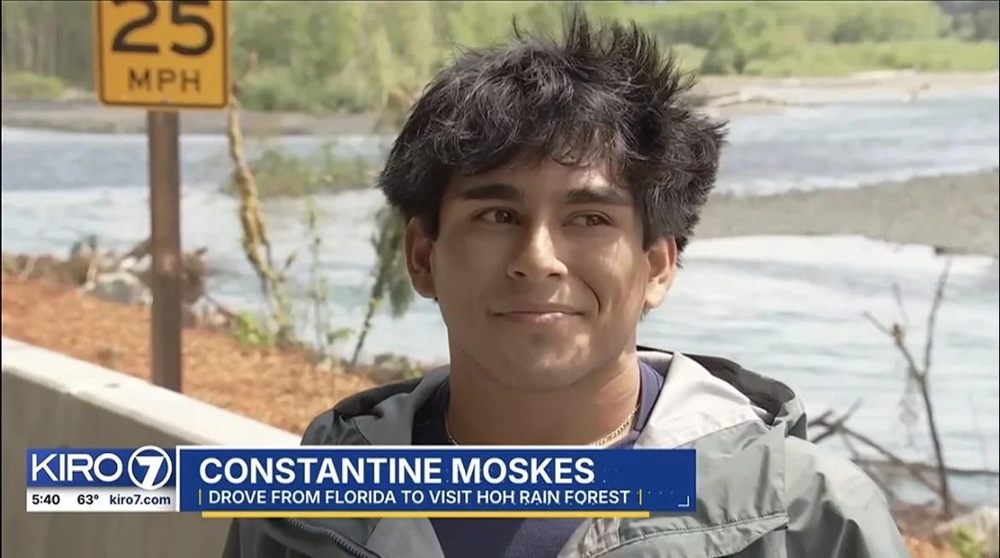
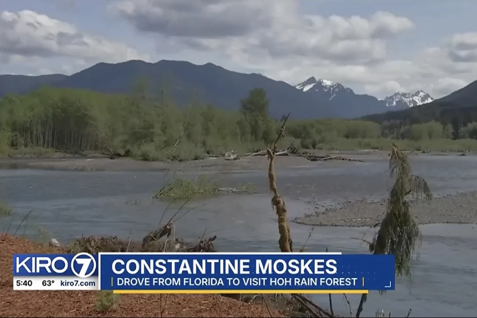

Trip highlight · Olympic National Park · May 8, 2025
The day the Hoh reopened.
After driving from Florida, we arrived for the reopening of the road to Hoh Rainforest. We met Governor Ferguson, walked the trail with him, and left with a piece of ribbon that’s now framed at home.

A day I’ll remember
On May 8, 2025, the road reopened after months of closure from storm damage. Hearing Governor Bob Ferguson speak made me think about how much work it takes to keep places like this accessible. I felt lucky to be there when people could return.
We got to meet Governor Ferguson after his speech and take a photo with him. I was also interviewed by KIRO7 about our visit. I’m thankful for both opportunities, but what made the day special was being there with people who understood how much this place matters.
“Inspiring — the way they all spoke about this. You could feel it.”
— My words in the KIRO7 report
Walking the trail together
After the ceremony, we got to hike with Governor Ferguson. Walking into the forest together made the reopening feel real: the road was open, and we could finally enjoy the place everyone had worked to protect.
That walk is what I remember most. A reopened road gave us—and everyone who came after us—the chance to experience this forest for ourselves.
Check out my photos from the hike →
A ribbon that stayed with us
After the ceremony, we were given a piece of the ribbon. We kept it in our car as a good luck charm for the rest of the trip, and now it’s framed in my house. To me, it represents more than that day. It reminds me that the places we love depend on people caring for them, and that keeping them open gives others the chance to make memories of their own.
My moment on the news
Watch the interview clip from the reopening.
Interview footage: KIRO7. Original reporting by Louie Tran.
Read the story on Yahoo →Read the original KIRO7 report →Moments from reopening day










